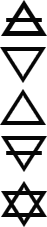

		<div class="main-container" id="aesg">
			<div class="main wrapper clearfix">
				<article>
					<section class="missao">
						<h1>Missão</h1>
						<p>Desenvolver o autoconhecimento, utilizando-se de métodos em grupo, baseados no Hermetismo e na Umbanda Natural, formando indivíduos conscientes e responsáveis por manifestar seus aspectos essenciais em seus projetos de vida.</p>
					</section>
					<section class="visao">
						<h1>Visão</h1>
						<p>Ser uma escola autossustentável e eficiente no método de autoconhecimento, que inspire e entusiasme membros engajados e coerentes.</p>
					</section>
				</article>

				<aside class="valores">
					
					<div class="aside">
						<h1>Valores</h1>
						<dl>
							<dt>Amor |</dt>
							<dd>Promoção de interações energéticas que geram resultados criativos, propiciando a expansão de consciência para a aplicação prática.</dd>
	
							<dt>Verdade |</dt>
							<dd>Expressão ética, harmônica e autêntica dos aspectos concretos, emocionais, mentais e espirituais, de acordo com a essência.</dd>
	
							<dt>Confiança |</dt>
							<dd>Postura de obedecer com fé a filosofia, a hierarquia e  a própria essência.</dd>
	
							<dt>Estudo |</dt>
							<dd>Disciplina para apreender o método, aprofundando nos conceitos disponibilizados e promovendo o entusiasmo pelo aprendizado magístico.</dd>
	
							<dt>Animação |</dt>
							<dd>Valorizar e incentivar a expressão emocional verdadeira, os acessos intuitivos e os sentimentos como guias das escolhas essenciais.</dd>
	
							<dt>Integração com o meio ambiente |</dt>
							<dd>Promover o reconhecimento da manifestação da multiplicidade como reflexo de si mesmo, e considerar a Natureza de Gaia como força orientadora das expressões verdadeiras.</dd>
						</dl>
					</div>
				</aside>

			</div> <!-- #main -->
		</div> <!-- #main-container -->

